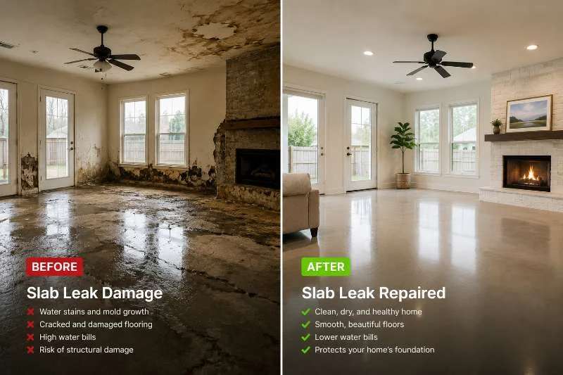

Comprehensive leak inspection
We conduct a thorough inspection using advanced leak detection equipment to identify the source of the leak.
Our slab leak repair service covers all aspects of the repair process, from initial inspection to final testing. We ensure that all necessary repairs are completed to restore your plumbing system effectively.
We conduct a thorough inspection using advanced leak detection equipment to identify the source of the leak.
Our repairs utilize durable materials such as PVC pipes and sealants to ensure long-lasting solutions.
Where possible, we use trenchless technology to minimize disruption and preserve your landscaping.
After repairs, we conduct thorough testing to ensure the leak is fully resolved and your plumbing system is functioning properly.
$50 OFF First-Time Service
Mention this offer when scheduling. New customers only — restrictions apply.
Slab leak repair involves identifying and fixing leaks in the pipes that run beneath the concrete slab of your home. This service is crucial for preventing extensive water damage, foundation issues, and mold growth. Our expert team utilizes advanced leak detection equipment and trenchless technology to ensure effective repairs, minimizing disruption to your home.
Local Rockwall, TX customers often face slab leaks due to the area's clay soil and shifting foundations. These conditions can lead to pipe corrosion and leaks, resulting in costly repairs if not addressed promptly. With our reliable slab leak repair in Rockwall, TX, you can avoid extensive damage and ensure the safety of your home.
Here's what to expect during our slab leak repair service.
Schedule
Call or book online — a real human picks up and confirms a 2-hour arrival window.
Diagnose
Licensed tech inspects on-site, then walks you through the cause and your options.
Fix
Clean, code-correct repair done with the right parts and zero subcontracted shortcuts.
Guarantee
Every job backed by a written workmanship warranty — and we stand behind it.
Leak detection equipment
Used to accurately locate the source of leaks without invasive measures.
Hydrostatic testing tools
Helps determine the pressure in the plumbing system and identify leaks.
Pipe inspection cameras
Allows for visual inspection of pipes to assess damage and locate leaks.
Trenchless technology equipment
Minimizes disruption by allowing repairs without extensive excavation.
Trenchless repair
This method allows for repairs without digging up your yard, saving time and preserving your landscape.
Hydrostatic testing
We apply pressure to the plumbing system to identify leaks, ensuring precise repairs.
Pipe rerouting
If necessary, we can reroute pipes to avoid future leaks and enhance your plumbing system's efficiency.
01
What we do: Call us for an inspection to determine if a slab leak is the cause.
→ Early detection can save you from extensive damage and costly repairs.
02
What we do: This could indicate a hidden leak; our team can quickly identify the issue.
→ Addressing leaks promptly helps reduce your water bills and prevents further damage.
03
What we do: This is a sign of a potential slab leak; contact us for immediate service.
→ Quick action can prevent extensive water damage and save you money.
In Rockwall, TX, slab leak repair must consider local soil conditions, which can cause pipes to shift and corrode. Our licensed plumbers are familiar with the unique challenges posed by the area's clay soil and ensure compliance with state plumbing codes. We frequently encounter slab leaks in neighborhoods like Downtown Rockwall and The Shores, where older homes may have outdated plumbing systems. Our affordable slab leak repair Rockwall, TX services are designed to address these issues promptly and effectively.
Downtown Rockwall
Older homes in this area often have plumbing systems that are more susceptible to slab leaks.
The Shores
Homes near the lake may experience shifting soil, increasing the risk of leaks.
Chandlers Landing
This neighborhood's unique soil composition can lead to foundation issues and slab leaks.
Clay soil causing pipe shifts
This can lead to leaks and foundation problems, requiring prompt repair.
Older plumbing systems
Many homes in Rockwall, TX have outdated pipes that are prone to corrosion and leaks.
Slab leak repair addresses several critical issues that can arise in your home.
Problem
Ignoring this can lead to significant structural issues and costly repairs over time.
Our Fix
Our expert team uses hydrostatic testing to locate and repair leaks, preventing further damage and costly repairs.
Problem
Water pooling under your slab can weaken the foundation, leading to cracks and instability.
Our Fix
We provide reliable slab leak repair in Rockwall, TX to stabilize your foundation and prevent future issues.
Problem
Mold can pose serious health risks and damage your home's interior if not addressed promptly.
Our Fix
Our quick slab leak repair services eliminate leaks and moisture, helping to prevent mold growth.

Effective slab leak repair offers numerous advantages for homeowners.
Prevent costly water damage
Timely slab leak repair can save homeowners thousands of dollars in potential water damage. Addressing leaks early prevents structural damage and costly repairs.
Improve home safety
Slab leaks can lead to mold growth and foundation issues. Our affordable slab leak repair Rockwall, TX services ensure your home remains safe and healthy.
Increase property value
A well-maintained home with no plumbing issues is more attractive to buyers. Investing in slab leak repair can enhance your property's value.
Reduce water bills
Fixing slab leaks can lead to significant savings on your monthly water bill. Our quick slab leak repair in Rockwall, TX helps you conserve water and reduce costs.
The cost of slab leak repair in Rockwall, TX typically ranges from $1,500 to $5,000. Factors that affect pricing include the severity of the leak, the repair method used, and the accessibility of the pipes. Our transparent pricing ensures you know what to expect without hidden fees.
Typical Investment Range
$1,500 - $5,000 depending on scope
Investing in slab leak repair now can save you from more significant expenses in the future, protecting your home.
What changes the price
Severity of the leak
More severe leaks require more extensive repairs, increasing the overall cost.
Accessibility of pipes
If pipes are difficult to access, additional labor may be needed, impacting the price.
Repair method
Using trenchless technology may cost more upfront but saves on landscaping repairs.
Google ★★★★★4.8
Fantastic service! They fixed my slab leak quickly and professionally. Highly recommend!
Yelp ★★★★★4.9
The team was knowledgeable and efficient. My home is safe again after their repair!
BBB A+
Excellent service and very reliable. They addressed my concerns promptly and effectively.
With over 15 years of experience, our team is dedicated to providing top-notch slab leak repair services in Rockwall, TX. We are licensed, insured, and bonded, ensuring you receive the highest quality service.
Real experiences from customers who chose our Slab Leak Repair services.
“I had a slab leak that caused major issues in my home. The team was quick to respond and fixed the problem efficiently. Highly recommend their services!”
John D.
Homeowner, The Shores
“The slab leak repair pros were fantastic! They explained the process clearly and completed the job on time. My home is safe again!”
Sarah L.
Homeowner, Downtown Rockwall
“Great service! They found and repaired my slab leak without tearing up my floors. Very professional and reliable.”
Michael R.
Homeowner, Ridge Road
Real answers to the questions we hear most often from local homeowners and property managers.
Our slab leak detection services utilize advanced technology to identify hidden leaks before they cause significant damage to your home.
View Slab Leak DetectionWe specialize in water line repair under slab to ensure your plumbing system functions properly, preventing leaks and water damage.
View Water Line Repair Under SlabOur sewer line repair under slab services address any issues with your sewer system, ensuring proper waste disposal and preventing backups.
View Sewer Line Repair Under SlabIf necessary, we offer pipe rerouting or repiping services to replace old or damaged pipes, ensuring a reliable plumbing system.
View Pipe Rerouting or RepipingTrenchless pipe repair methods allow us to fix leaks without extensive excavation, saving you time and money while preserving your landscape.
View Trenchless Pipe RepairOur emergency slab leak repair services are available 24/7, ensuring you receive prompt assistance when you need it most.
View Emergency Slab Leak RepairWe're here to help with all your slab leak repair needs. Reach out to us anytime, and we'll respond quickly. Our team is available 24/7 to assist you.
Phone
+1 (469) 368-2424Address
105 W Washington St, Downtown Rockwall, TX 75087
Hours
Mon–Fri: 7AM – 7PM
Sat: 8AM – 4PM
Sun: Emergency Only
24/7 Emergency Available